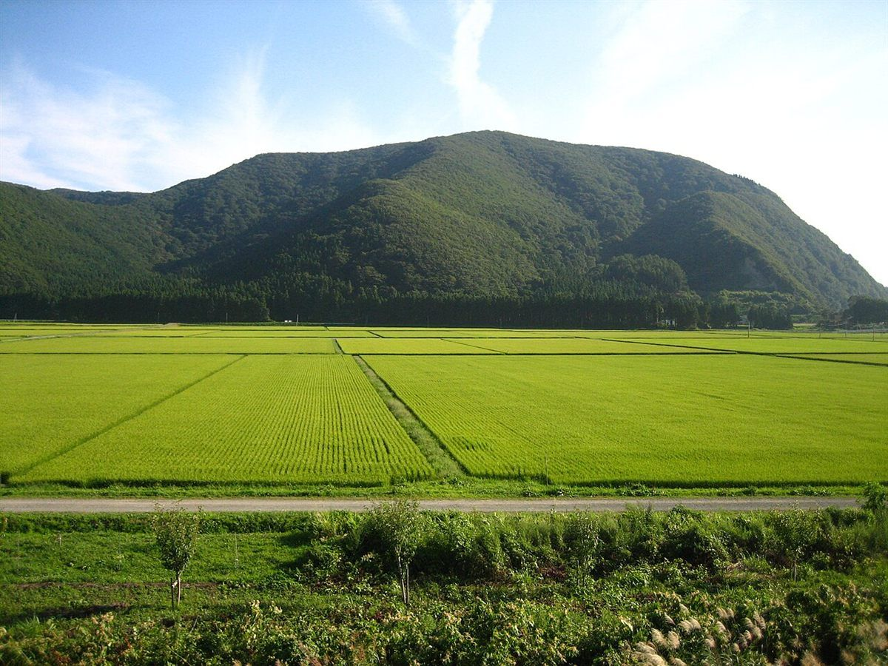
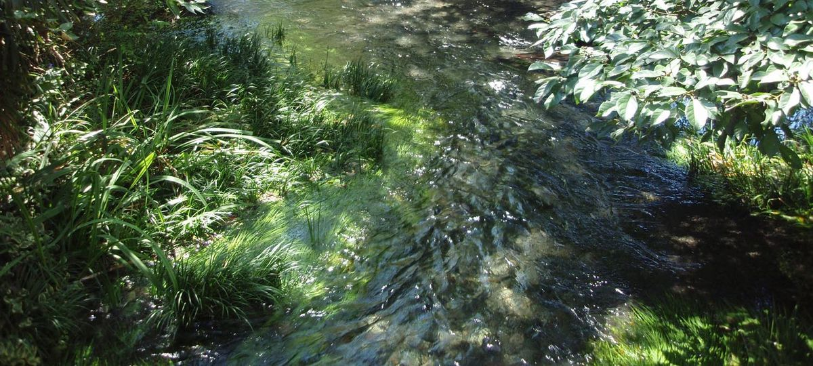
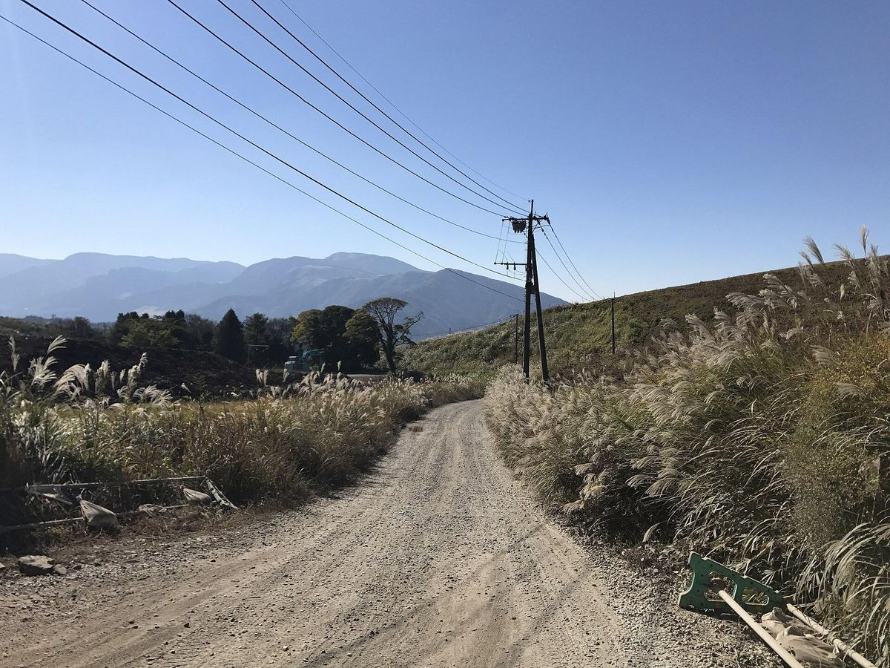

アクセス
- 住所
- 鹿児島県大島郡龍郷町中勝 字奥間前580番地
- 営業時間
- 準備中(お問い合わせください)
- 駐車場・最寄り交通
- 準備中(お問い合わせください)
地図
地図は住所をもとに表示しています。お出かけの前に、お電話で場所をご確認いただくと安心です。

お出かけ前にお電話を
営業時間や駐車場については、お電話かInstagramでお問い合わせください。


地図は住所をもとに表示しています。お出かけの前に、お電話で場所をご確認いただくと安心です。

営業時間や駐車場については、お電話かInstagramでお問い合わせください。

掲載している写真はフリー素材のイメージ写真で、店舗の実際の様子ではありません。他地域で撮影されたものや、撮影地が不明なものを含みます。
電話する 0997-69-3755